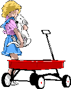
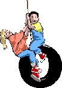

Técnicas Didácticas de la Pedagogía, en LUDOLINGÜÍSTICA.
La Didáctica, didaktikos del griego = enseñar, es lo propio para enseñar o instruir, disciplina ejercida por el primer gran pedagogo JESÚS, y seguida por Comenius, Jan Amós Comenio, que en las oscura épocas que vivieron, dirigieron, enseñaron y corrigieron, el “paidagogos griego”, esclavos que llevaban los niños a las escuelas. Siendo la didáctica la mejor colaboradora de la pedagogía.
La Pedagogía es hoy, el arte o ciencia de enseñar y se ocupa de la enseñanza. Cumpliéndose lo dicho por Jesús: “Todo lo que desearían de los demás, háganlo con ellos” Mateo 7,12.
Ludo = significa "Yo juego" en latín. Lingüística es la ciencia que se ocupa de descubrir y entender la naturaleza y las leyes que gobiernan el lenguaje.
Hoy existen juegos y técnicas de la mente, para el desarrollo del Lenguaje, la Creatividad, Imaginación, Asociación de Ideas, Memoria, Vocalización, Corrección y Articulación de las Palabras en el idioma Español, que ayudan a mejorar el rendimiento y facilitan el proceso de memorización y estudio.
En los juegos didácticos intervienen todos los sentidos, atención, concentración y estímulos, incluye la Ley de la Repetición o la Ley Universal. Si alguien quiere aprender a tocar instrumentos musicales, hay que repetir las notas hasta reconocerlas, así la mente las aceptará como propias.
La Ley de la Repetición, es un proceso o acción que se repite más de una vez o varias veces, para que la mente la capte con el tiempo y la grabe naturalmente.
Nacimos para crear, disfrutar y ganar, como lo decía también uno de los grandes hombres Aristóteles, “que no se piensa sin imágenes”, e imágenes debemos crear a los alumnos, los amigos, las familias, como las claves del juego didáctico, que son convivir, compartir, competir. Estrategias y esfuerzos individuales para superar los retos al ganar o perder, como la vida de todos los seres humanos.
Así son los Juegos de Palabras, en Parábolas, Fábulas, Moralejas, Cuentos, Claves, Crucigramas, Historietas, Metáforas, Acrósticos, Apotegmas, Aforismos, Acertijos, Anagramas, Adivinanzas, Criptogramas, Mímicas, Caligramas, Cartas, Loterías, Paradigmas, Palíndromos, Refranes, Rompecabezas, Sentencias, Símbolos, Tautogramas, Pangramas, Abecedáfigos, Jeroglíficos, Trabalenguas, Silabificación, Jeringonza, Galimatías, Mnemotecnia,
Todos aprendimos jugando
Y todos lo disfrutamos
|  |
Son trucos para reavivar la memoria o mnemotecnia, arte y técnica empleada para aumentar, retener y memorizar un número indeterminado de palabras asociándolas con combinaciones y símbolos, palabra que viene de Mnemósine, de la mitología griega, la diosa de la memoria, madre de las 9 musas.
Los Juegos didácticos son útiles terapias cognitivas, enriquecen el idioma, estimula la atención, recuperan la memoria, la observación, la fonética, enriqueciendo el vocabulario y modifican la forma de hablar, pronunciar y vocalizar correctamente. Utilizar los juegos didácticos, no solo es un pasatiempo, es una útil disciplina, para grandes y pequeños de todas las culturas, creencias y razas.
Como dijo Jesús: “Busquen y hallarán. Mateo 7,7. “¿Por qué dices SI PUEDES? Todo es posible para el que cree” Marcos 9,33. “El Reino de Dios se alcanza a la fuerza, y solo los esforzados entran en el” Mateo 11,12
Las técnicas con juegos didácticos, contienen normas, trucos, técnicas y recetas de estudio, herramientas útiles e importantes en el mundo estudiantil, evitan el fracaso escolar y el aburrimiento en los centros educativos y tareas escolares, para estimular el rendimiento, y el despertar la conciencia individual por sus resultados.
¡Si en tu entorno hay niños y grandes comparte con ellos una re-creación divertida!
Corima 2007 Capítulo I